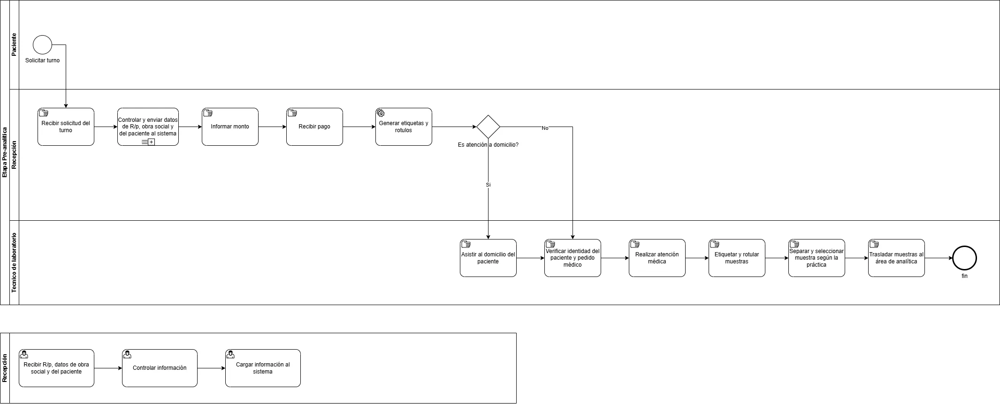

Etapa Preanalítica
//Intro a la etapa preanalitica
Diagnóstico
//Creo que aca va toda la info que juntamos en la reunion
// todo lo que tenga que ver con el estado actual del Laboratorio.
//Quizas se puede separar en Descripcion General, Problematicas, Ideas Propuestas
// como las cosas que se fueron mencionando al respecto.
Procesos
//Tiene que ver con el estado actual pero seria solo la descripcion
// de cada proceso. Probablemente BPMNs.

Objetos
//Esto no estoy tan seguro pero segun entiendo serian todas las
// entidades relacionas o involucradas en el proceso.
// Hay que ver porque un equipo ya tiene "Pacientes" por ejemplo
// entonces hay que ver qué cosas poner aca que no se repitan.
Entidades Humanas
- Paciente: persona que solicita o recibe el estudio
- Médico solicitante: profesional externo que genera la orden médica
- Personal administrativo: recibe al paciente, valida cobertura, informa costos y asigna turnos
- Técnico de laboratorio: realiza la extracción, rotula y conserva las muestras
- Bioquímico: supervisa el proceso y controla la calidad pre-analítica
Entidades Administrativas/Documentales
- Orden médica o pedido de análisis: documento presentado por el paciente
Sistemas Informáticos
- LeoLab (sistema lys): sistema central que gestiona ordenes, etiquetas y resultados
- Sistema de verificación de obra social/prepaga: para autorizar estudios o verificar cobertura